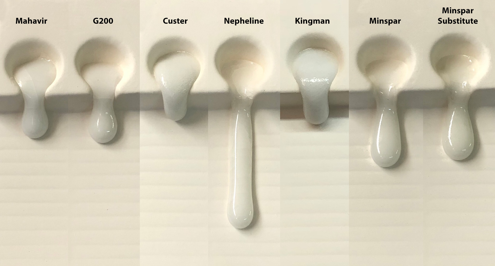
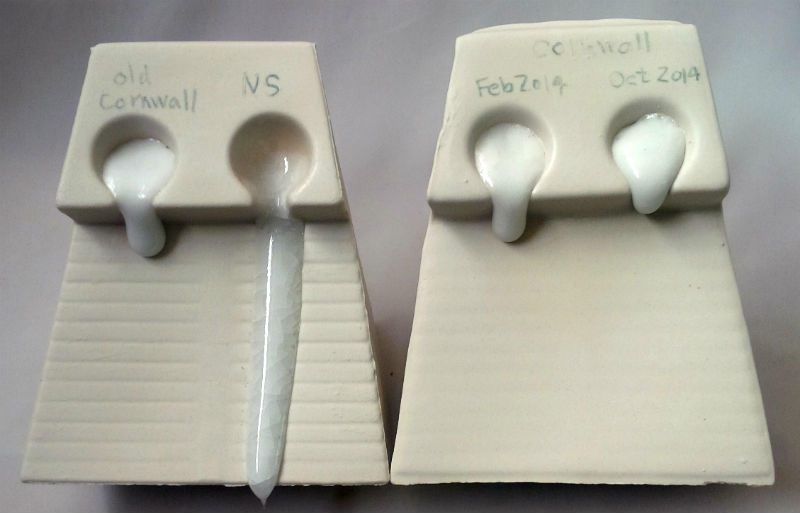
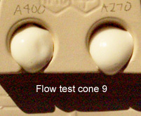
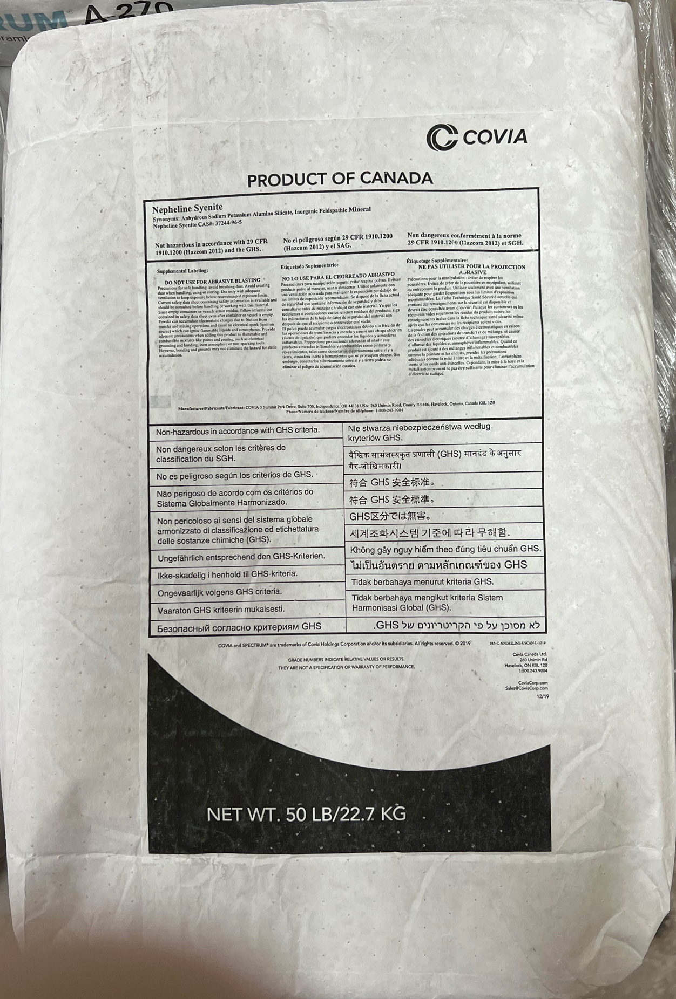
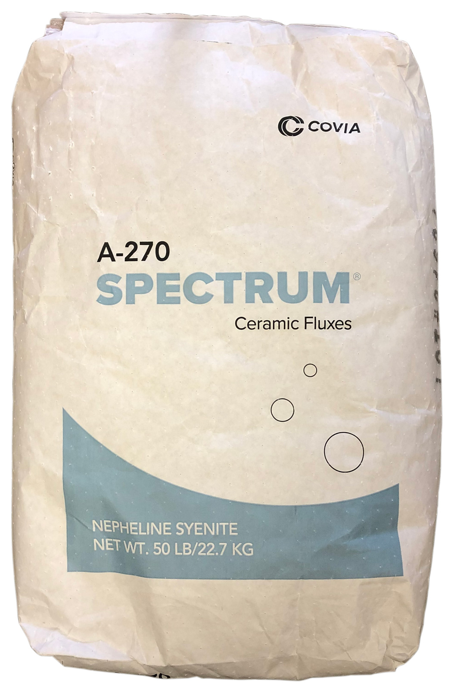
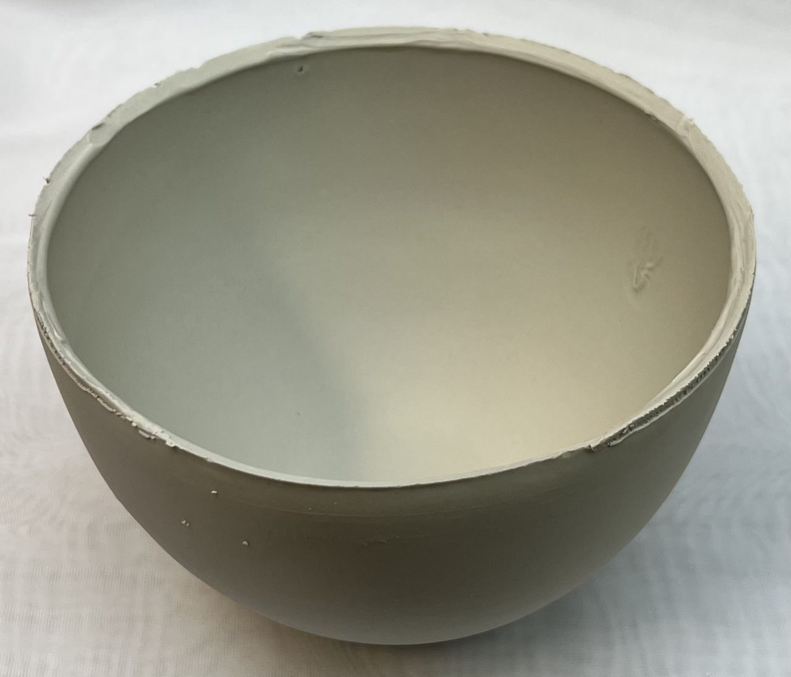
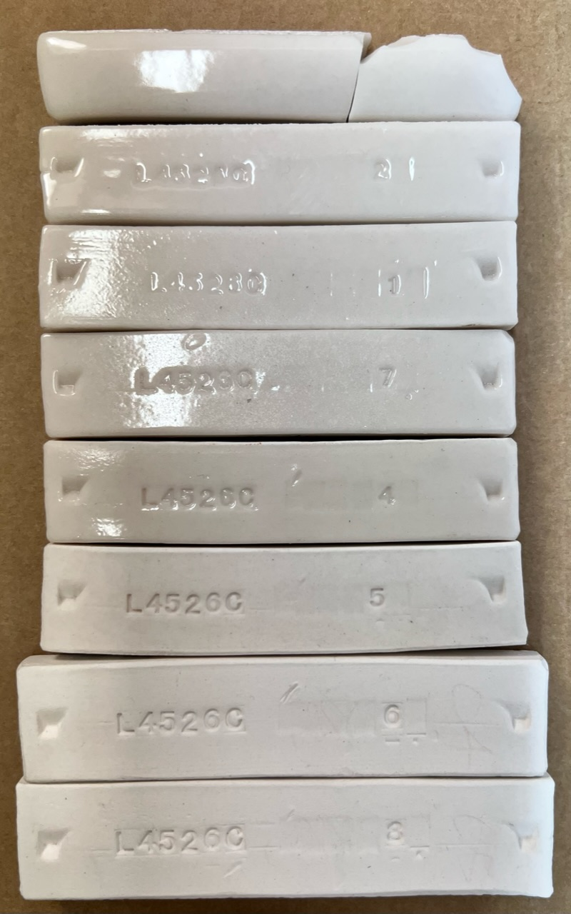

Covia Nepheline Syenite
| Oxide | Analysis | Formula | Tolerance |
|---|---|---|---|
| CaO | 0.39% | 0.03 | |
| K2O | 4.85% | 0.23 | |
| MgO | 0.02% | - | |
| Na2O | 10.40% | 0.74 | |
| Al2O3 | 23.60% | 1.02 | |
| SiO2 | 60.20% | 4.42 | |
| Fe2O3 | 0.08% | - | |
| LOI | 0.50% | n/a | |
| Oxide Weight | 439.13 | ||
| Formula Weight | 441.34 | ||
Notes
Their data sheet describes this as a naturally occurring, silica-deficient sodium-potassium alumina silicate. The higher total alumina and alkali contribution available from nepheline syenite produces ceramic ware with greater impact and flexural strength and improved resistance to the stresses of thermal extremes and mechanical shock. The lower melting eutectic and increased fluxing power make possible body compositions which mature at temperatures as low as cone 3-5. It is the higher alkali to alumina ratio and greater chemical reactivity that accelerate the melt and promote a faster maturation. It will increase the rate of vitrification over a wider firing range, ensure smooth glazed surfaces even at lower temperatures and help to reduce the deformation typically encountered in fast fire cycling. When the objective is improved translucency, this will combine with and consume the available free crystalline silica to create highly translucent wares.
The author's experience with this material is nothing but positive. Many decades of reliable quality and availability in a body and glaze flux of higher quality than anything else available. This is a great company!
Grades available: A-200, A-270, A-400, ASTM E-11
Property: Test Method Unit Values
~~~~~~~~~~~~~~~~~~~~~~~~~~~~~~~~~~~~~~~~~~~~~~
Mineral Petrographic Microcline/Albite/Nepheline
Specific Gravity ASTM C128 2.61
Melting Point ASTM C-24 1868F/1020C
Bulk Density ASTM C-29 38-55 lbs/cu ft
Free Silica < 0.1%
Related Information
Which is the champion melter of American/Canadian feldspars?

This picture has its own page with more detail, click here to see it.
Feldspars are employed in glaze recipes as melters. So comparing their melt fluidities should be helpful in deciding if one can substitute for another (of course, if possible, a soda-predominant feldspar should be substituted for another soda spar). Feldspars don't melt alone at cone 6 (2200F) so we mixed each with 15% Ferro Frit 3195 (we consider a feldspar a material that sources KNaO). Nepheline Syenite, this is A270, is the champion melter here. Other similar ones can be spotted easily. In the end, degree of melt is a valid consideration in determining if one feldspar is a viable substitute for another in a recipe. Even if the feldspar you want to substitute does not melt as much a little frit can be added to the recipe to make up for the difference (e.g. 3-5%).
Melt fluidity: Cornwall Stone vs. Nepheline Syenite

This picture has its own page with more detail, click here to see it.
Three Cornwall Stone shipments (from 2011 and 2014) fired at cone 8 in melt flow GLFL testers and compared to Nepheline Syenite. Each contains 10% Ferro Frit 3134.
Melt flow comparison between Nepheline Syenite 270 and 400 mesh

This picture has its own page with more detail, click here to see it.
This Nepheline Syenite GLFL test for melt flow did not demonstrate much of a difference in melting at cone 9 between 270 and 400 mesh materials.
Warnings on back of Covia nepheline syenite bag 2021

This picture has its own page with more detail, click here to see it.
It is stated as non-hazardous in accordance with GHS criteria. Although like feldspar in chemistry, mineralogically nepheline syenite powder is a gound igneous rock, it does not contain quartz.
Covia nepheline syenite bag as of 2021

This picture has its own page with more detail, click here to see it.
Casting pure nepheline syenite

This picture has its own page with more detail, click here to see it.
Well, actually, it is not completely pure - I had to mix in 10% bentonite to give it enough shrinkage and leather hard strength to be able to pull itself away from the plaster mold (this bowl was just extracted). It cast without cracks to 3mm thickness in about 15 minutes. The defloculated slip required more water than normal but it pours and drains beautifully. I have made higher-percentage slurries in the past using Veegum but the casting time was too long. On aging, the previous slurry did not change its rheological properties after a month of storage. Nepheline syenite is a fantastic material for pottery bodies Of course, it is not used pure, this is just a demonstration. That being said, firing tests showed a vitreous product around cone 1.
Covia Nepheline Syenite (from Canada):
Here is what it does from cone 3 down to 05

This picture has its own page with more detail, click here to see it.
These SHAB test fired bars are 95% nepheline syenite (5% Veegum added). By cone 02 (bar stamped #4) is self-glazing and glass-like with a total shrinkage (plastic to fired) of 15% (less than some porcelains). At cone 03 (the #5 bar) the porosity is 3% (a stoneware). This is not an absolute indication of the materials' melting profile because of the Veegum, it behaves as a powerful flux and melting catalyst.
The Blue Mountain nepheline syenite deposit in Havelock, Ontario, is a major, high-purity industrial mineral source mined since 1955 for glass, ceramics, and filler applications. This 99% pure, iron-poor deposit consists of albite, microcline, and nepheline. It has less than 0.1% free SiO2 and Fe2O3! The deposit is approximately 400 feet deep.
Links
| Materials |
Nepheline Syenite
|
| Typecodes |
Feldspar
The most common source of fluxes for high and medium temperature glazes and bodies. |
| URLs |
https://digitalfire.com/4sight/datasheets/SDSNephelineSyenite.pdf
Nepheline Syenite SDS |
| URLs |
https://digitalfire.com/4sight/datasheets/SpectrumNepheline.pdf
Covia Nepheline Syenite data sheet |
| URLs |
https://www.coviacorp.com/
Covia Corp website |
| Hazards |
Feldspar
Feldspars are abundant and varied in nature. They contain small amounts of quartz (while nepheline syenite does not). |
 PayPal | No tracking, No ads, No paywall, No transient content! Just organized, concise information constantly updated and improved. Was this helpful? Consider supporting me. |
| By Tony Hansen Follow me on        |  |
Got a Question?
Buy me a coffee and we can talk 

https://digitalfire.com, All Rights Reserved
Privacy Policy